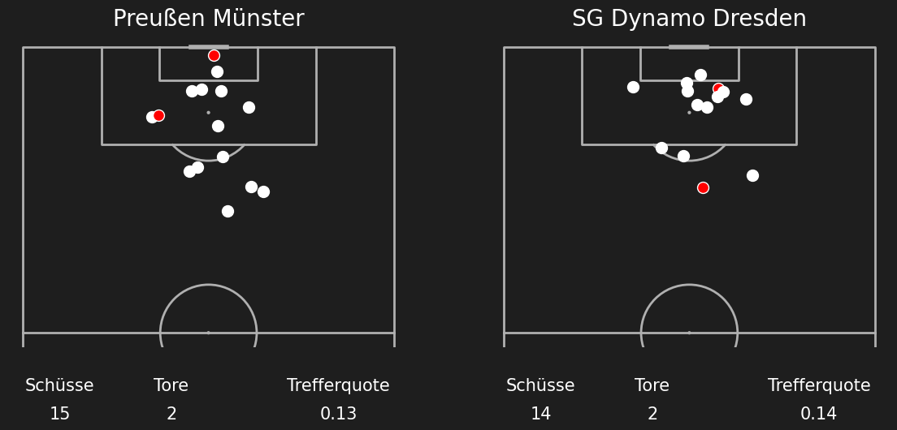
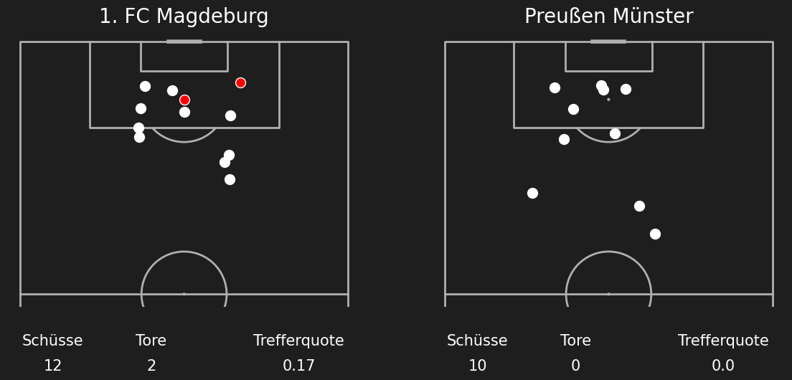
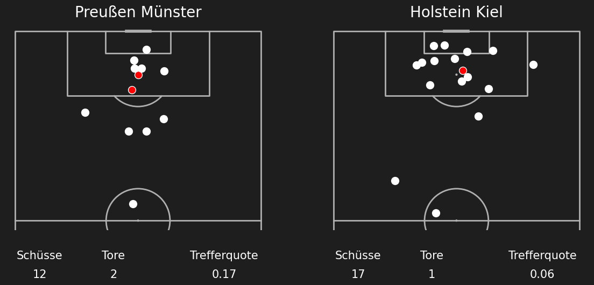
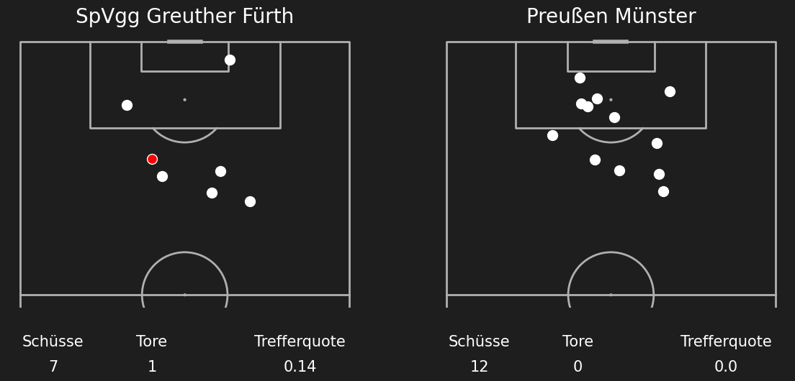
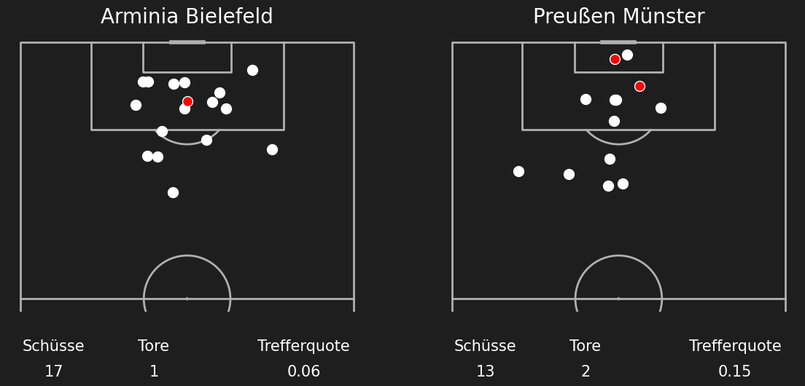
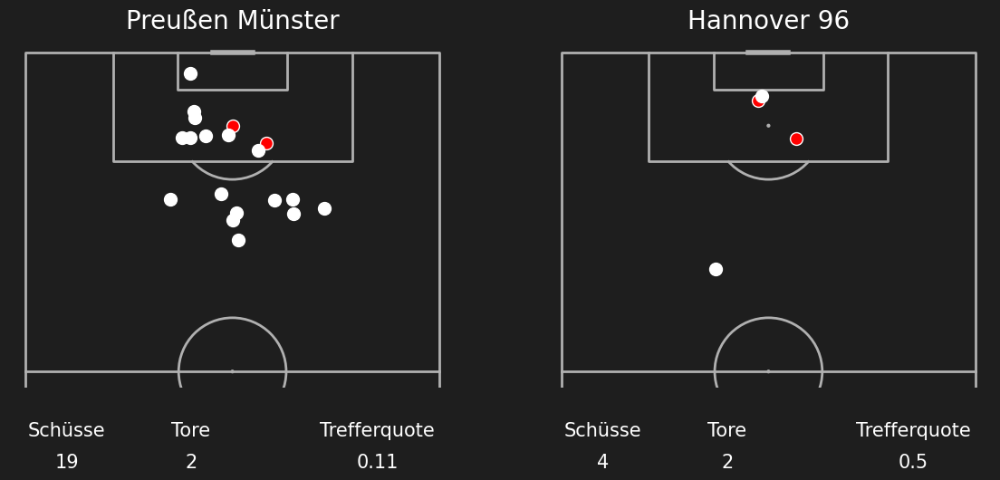
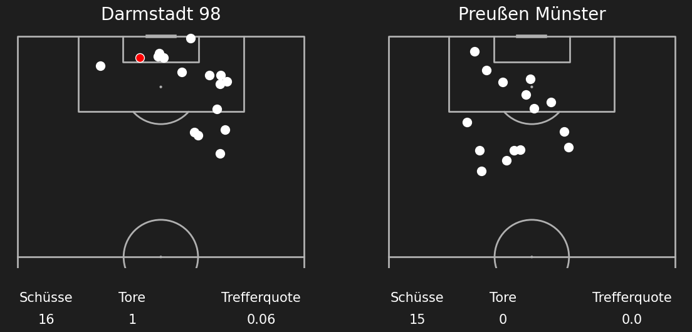
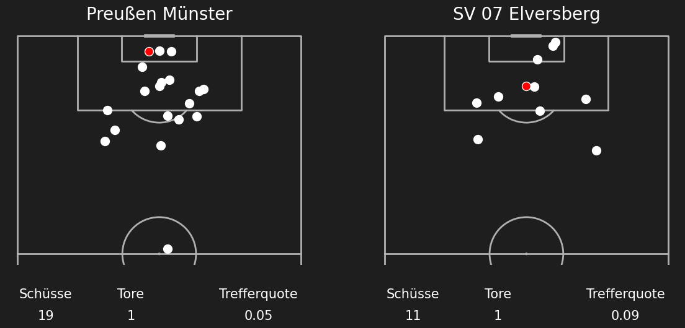
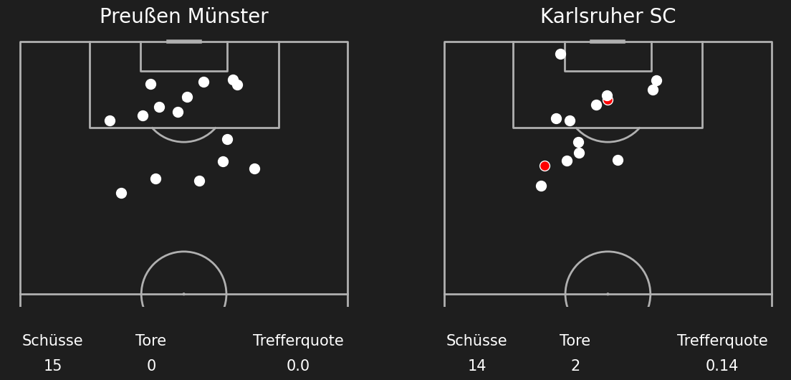
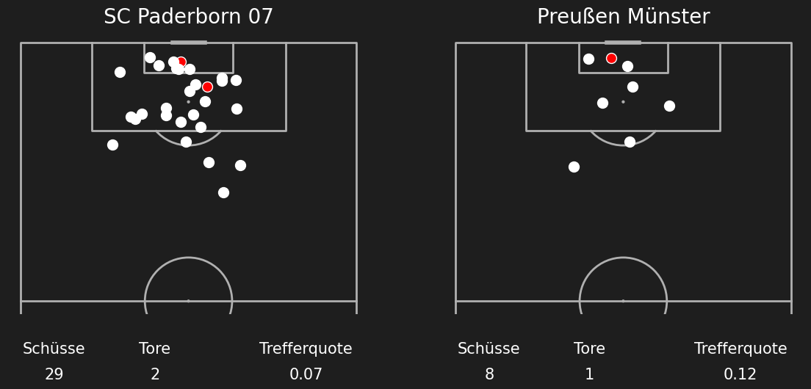

Shotmaps Preußen Münster Saison 25/26
Runde 1 Karlsruher SC (3) - (2) Preußen Münster
_-_(2)_Preußen_Münster.png)
Runde 2 Preußen Münster (1) - (1) SC Paderborn 07
_-_(1)_SC_Paderborn_07.png)
Runde 3 Preußen Münster (2) - (1) 1 FC Nürnberg
_-_(1)_1_FC_Nürnberg.png)
Runde 4 VfL Bochum 1848 (1) - (2) Preußen Münster
_-_(2)_Preußen_Münster.png)
Runde 5 Preußen Münster (1) - (2) Fortuna Düsseldorf
_-_(2)_Fortuna_Düsseldorf.png)
Runde 6 1 FC Kaiserslautern (4) - (1) Preußen Münster
_-_(1)_Preußen_Münster.png)
Runde 7 Preußen Münster (3) - (1) Eintracht Braunschweig
_-_(1)_Eintracht_Braunschweig.png)
Runde 8 Hertha BSC (2) - (1) Preußen Münster
_-_(1)_Preußen_Münster.png)
Runde 9 Preußen Münster (2) - (2) SG Dynamo Dresden

Runde 10 1 FC Magdeburg (2) - (0) Preußen Münster

Runde 11 Preußen Münster (2) - (1) Holstein Kiel

Runde 12 SpVgg Greuther Fürth (1) - (0) Preußen Münster

Runde 13 Preußen Münster (0) - (0) FC Schalke 04
_-_(0)_FC_Schalke_04.png)
Runde 14 Arminia Bielefeld (1) - (2) Preußen Münster

Runde 15 Preußen Münster (2) - (2) Hannover 96

Runde 16 Darmstadt 98 (1) - (0) Preußen Münster

Runde 17 Preußen Münster (1) - (1) SV 07 Elversberg

Runde 18 Preußen Münster (0) - (2) Karlsruher SC

Runde 19 SC Paderborn 07 (2) - (1) Preußen Münster

Runde 20 1 FC Nürnberg (1) - (1) Preußen Münster
_-_(1)_Preußen_Münster.png)